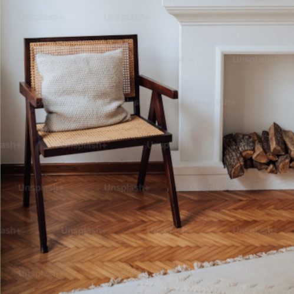

Elements of Design
These are the basic components of any artwork, design, or other creative piece. They work together using the Principles of Design (right), to create a cohesive, aesthetic result.
LINE
A straight or curved mark connecting two points which can very in weight, direction, and/or length.
Not everything has to be straight, "clean" lines. Try mixing straight and curved; horizontal, vertical, and diagonal, thick and thin, and even implied lines for some extra creativity.
SHAPE
"Shape language" is used to create dimension and communicate intentions. Consider the two chairs shown below. One is composed of rectangles, and communicates a more structured, formal look. The other is based on circles, and gives a more relaxed feel. The good news is, it doesn't have to be circles or squares! Squiggles and blobs are also shapes - called
organic shapes - and can help you get creative.


COLOR
The perception of light reflecting off a surface, composed of hue (the basic color like red or blue), value (how dark or light it is), and intensity/saturation (how bold or muted the color is).
Don't be scared of color! Your house doesn't have to be white and grey, if that's not your style. Just make sure to follow a color scheme. This can be a primary, complementary, or other color scheme formula. Try changing the value or saturation of your colors too! If you need some inspiration, you can browse our color palette style guide.
VALUE
The darkness or lightness in a shade (a variation of black),tint (a variation of white), or color. Using different values can bring dimension to your space. As mentioned above, value is also a part of color; it's not just for black and white. It is common to see darker colors closer to the ground, and ligher colors closer to and on the ceiling. This strategy mimics the natural world and grounds your space.
FORM
A three-dimensional, enclosed area which can be geometric or organic. Much like shapes, form is used to create dimension and interest in your space, but form is concerned with all three dimensions. If the chairs from before are based on shapes, then form would be the way those shapes interact and come together to create the final result. Form tells you whether the chair will be cushiony or firm, for example.
TEXTURE
The surface quality of a material, which can be tactile or visual. When you look at a cactus, you know the spines will be prickly, even if you haven't touched it yet. This is because of texture. However, there is also visual texture, which is basically your eyes telling you that something
would be soft, or rough, or slimy even though you can't actually
feel it. For example, the image below is smooth to the touch, but looks as though it should be gritty and rough. Using texture in your house can bring a subtle interest that doesn't overwhelm your space, so you can still add fun elements like colors and patterns.
SPACE
The space around (negative space) or within (positive space) elements in a composition. Have you ever wondered why your living room looks so full, even though you never have enough seating at gatherings? This may be because of space. If your couch looks heavy and imposing, it takes up more visual space than the physical space it takes, making the room look more crowded than it actually is. Make sure to balance the amount of heavy-looking items with lighter, more open-looking pieces.
Principles of Design
These are the second level of components used by creators, which are applied to the Elements of Design (left).
BALANCE
The distribution of elements within the composition in a symmetrical, asymmetrical, or radial way. If you put your bedroom on a scale, would it lean to one side or another? This is one way to consider whether your space is balanced. If one side of your space is crammed full and the other side is empty, it may feel off-kilter. This also applies to vertical space. If all of the elements in your space are the same height (or plane) then the space may feel bottom-heavy. Try placing some large artwork, long curtains, or tall floor lamps in your space to break up that plane.
EMPHASIS
The area or focal point to which a viewer's eyes are drawn. This point can be made with color, size, shape, texture, etc. If you have a fireplace in your living room, it is likely the focal point of that room. Perhaps it is very large, or a constrasting color from the rest of the room, or covered with highly-textured river rock. Any one of these elements could make it a focal point. Every room has emphasis, but not every room needs a focal point. If you have something you would like to draw attention (like that fireplace you spent a lot of money on), then it should be a focal point. If there is nothing significant in the room, then let the room decide it's own emphasis.
MOVEMENT
The path a viewer's eye takes through a composition. Have you ever had to decide where to sit at a formal dinner, or choose a place on the couch for movie night? You were probably guided to the most suitable place by the principle of movement. Movement brings interest to a space, but also guides people on how to navigate through a space, or where to reside within it.
PATTERN & REPETITION
Pattern is a repeating element, and repetition is a combination of pattern and movement to make a piece seem active. Use pattern carefully, but don't be scared of it! Too many different patterns can overwhelm a space like a kaleidoscope. But if you'd like to use patterns, try choosing one or two, and varying factors like the size and contrast of those patterns.
RHYTHM
When one or more elements are repeated in a way that conveys organized movement or visual tempo. As opposed to repetition or pattern, rhythm is more about the overall feel and continuity of the space. This can be achieved using a certain finish, like a patterned tile, or decoration, like a style of artwork.
PROPORTION
The relative size and scale of elements within the composition. One of the easiest to learn, yet hardest to master, proportion demands absolute coordination between elements of a space. It combines balance and unity with size and contrast. Luckily, the basics mostly dictate that no elements look too small or too big for your space.
VARIETY
The use of several elements of design to guide the viewer's eye and hold their attention. You don't want everything to look identical, or you would end up with a very boring space. Variety means making things strategically different. It must be balanced with harmony to reach a happy medium of new and repeated elements.
HARMONY
Also called unity; the coordination between all elements of a composition to make it feel complete. Closely linked with variety, harmony means all the elements in a space should feel like they fit. This is basically a more technical way to define your style. This can be defined by a consistent color scheme, shape language, theme of finishes and many other commonalities.